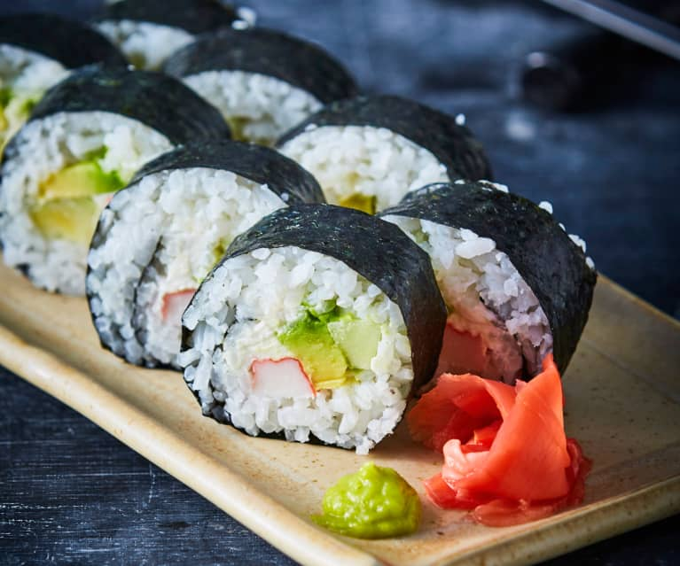

Sushi Recipe :D

A photo of a delicious looking sushi
In the following tutorial we'll learn how to make a delicious homemade sushi with simple ingredients and in an easy way, so you can make it whenever you want uwu
Ingredients (for 4 servings)
- 2/3 cup of water
- 1/3 cup medium-grain white rice, uncooked
- 6 tablespoons rice vinegar
- 4 sheets nori (dry seaweed)
- 4 ounces smoked salmon, cut into strips
- 2 ounces cold cream cheese, cut into thin strips
- 4 scallions, sliced into thin strips
Steps
- Bring water and rice to a boil in a saucepan. Reduce heat to medium-low, cover, and simmer until rice is tender and water has been absorbed, 20 to 25 minutes. Remove from the heat and cool, about 10 minutes. Toss with vinegar.
- Place 1 sheet of nori on a rolling mat, layer with 1/4 of the rice, and press rice out to the edges. Lay 1/4 of the salmon, 1/4 of the cream cheese, and 1/4 of the scallions in the center. Roll up carefully and wrap in plastic wrap. Repeat with remaining nori, rice, salmon, cream cheese, and scallions. Place in the refrigerator until chilled, at least 1 hour.
- Remove sushi rolls from the refrigerator, discard plastic wrap, and cut each roll into 6 slices. Layer all rolls on a platter.